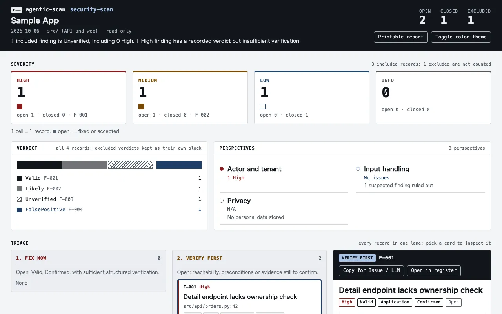
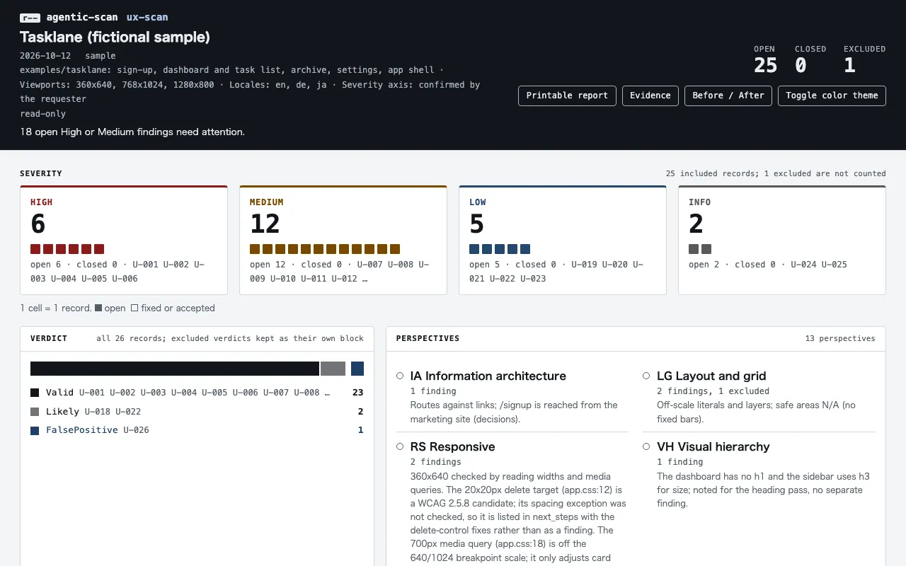
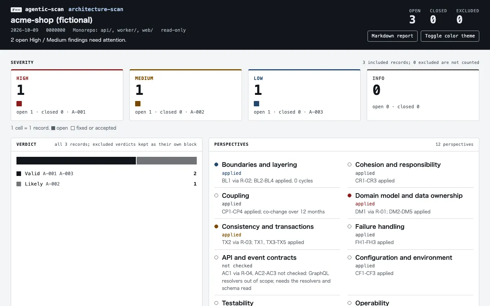
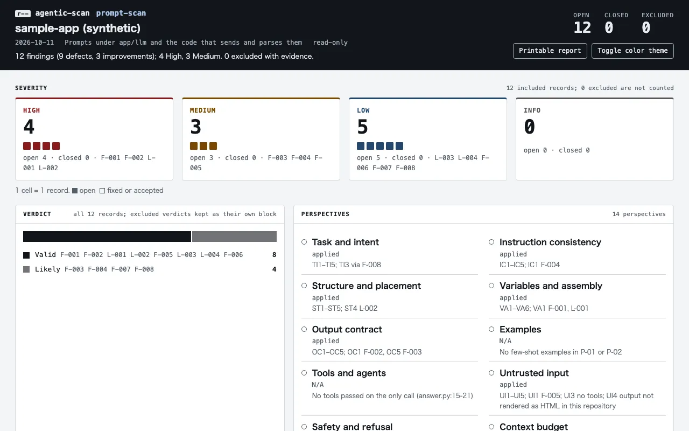

12 review skills for Claude Code · Codex · Antigravity
Findings you can check,without touching your code.
agentic-scan is 12 skills that let an AI agent read your repository and review it. From security to UX, every finding comes with a file and line and a verification verdict.
12 skillsread-onlydashboard + report
jq -r '.findings[] | [.id, .severity, (.validation.verdict // "-"), .location] | @tsv' \
security-scan/examples/findings.sample.json | column -t
F-001 High Valid src/api/orders.py:42 F-002 Medium Likely src/api/util.py:7 F-003 Low - deploy/php.ini:9 F-004 High FalsePositive src/api/reports.py:88
F-004 was judged a false positive during verification. It is not deleted; it stays in the record with its evidence. “The fragment is built only from a fixed allowlist of column names (src/api/reports.py:70-76); no request value reaches it”
One skill per angle.
Each skill covers a single angle and follows its own steps. The finding next to each one comes from the sample data bundled with that skill (all fictional apps).
architecture-scan
Module boundaries and dependencies, data ownership, behaviour under failure, ease of operation.
RECON ─► CHECKLIST ─► REVIEW ─► VERIFY ─► REPORT
High Refund job writes invoices directly, skipping billing's tax rules
bug-scan
Classifies how bugs got in from git history, then looks for the same entry points still in today's code.
RECON → CATALOG → HISTORY → TRIAGE → REVIEW → VERIFY → RECONCILE → REPORT
High An order is placed with a zero-width-space coupon
data-integrity-scan
Missing constraints, unsafe migrations, transaction gaps, lost updates.
RECON ─► CHECKLIST ─► REVIEW ─► VERIFY ─► PLAN ─► REPORT
Medium Wallet debit reads the balance and writes it back without a lock
infra-security-scan
Exposure, permissions and attack paths, read from Terraform, CloudFormation and Kubernetes config. Never calls cloud APIs.
RECON ─► CHECKLIST ─► REVIEW ─► VERIFY ─► REPORT
High Customer export bucket is readable by allUsers
logic-scan
Errors in business rules such as pricing, tax, deadlines and state transitions. Every finding comes with a counterexample.
RECON ─► CHECKLIST ─► REVIEW ─► VERIFY ─► PLAN ─► REPORT
High The invoice rounds tax per line while the charge rounds it once, so the card is charged a different amount
performance-scan
N+1 and unbounded queries, indexes, blocking I/O, caching, bundles.
RECON ─► CHECKLIST ─► REVIEW ─► VERIFY ─► REPORT
High Order list lazy-loads items per order and products per item (N+1)
privacy-scan
How personal data flows, consent, retention and deletion, sharing with third parties, logs. Not legal advice.
RECON ─► CHECKLIST ─► REVIEW ─► VERIFY ─► REPORT
High Analytics SDK initialises before consent
prompt-scan
LLM prompts and the code that assembles and parses them. Missing variables, contradictions, output contracts that drift.
RECON ─► CHECKLIST ─► REVIEW ─► VERIFY ─► REPORT
High Template variable context is never filled
prune-scan
Code, features, flags, dependencies and config that no longer earn their place. What can go, and in what order.
RECON → UNITS → CHECKLIST → REVIEW → VERIFY → REPORT
High Unauthenticated /debug/dump returns the whole app config, secrets included
security-scan
Authentication and authorisation, cross-tenant access, injection, secrets, dependency packages.
RECON ─► CHECKLIST ─► REVIEW ─► VERIFY ─► REPORT
High Detail endpoint lacks ownership check
test-gap-scan
Defects that slip past the tests: weak assertions, mocks that differ from the real thing, tests CI never runs.
RECON ─► CHECKLIST ─► REVIEW ─► VERIFY ─► PLAN ─► REPORT
Medium The shared gateway mock accepts any amount the real gateway refuses
ux-scan
Screens and primary flows, states, forms, accessibility, microcopy.
RECON → FLOWS → CHECKLIST → REVIEW → VERIFY → REPORT
High Saving a new task discards the typed title
Read it, try to disprove it, then hand it over.
The steps differ from skill to skill; the rules are the same.
- read-only
- Nothing is rewritten by default. No code is edited and no traffic is sent to deployed systems. Adding tests or trying things on a throwaway database happens only when you explicitly ask for it and allow it.
- verify
- Every finding gets a verdict. The path is traced again and the finding is recorded, with evidence, as holding (Valid), not yet confirmable (Unverified) or a false positive (FalsePositive).
- keep
- Findings judged wrong are not deleted. They stay as FalsePositive or NotApplicable with their evidence, so you can see what was excluded.
- decide
- People make the call. Which risks to accept and what comes first are handed over separately, as the dashboard's decisions that need your judgment.
Results in one dashboard you can open anywhere.
It is a single HTML file, so it opens offline. The record stays in findings.json, ready for comparing with a re-scan or exporting to SARIF. Below are real screens generated by each skill's make demo.




cd security-scan make demo NO_PDF=1 DEMO_OUT=../out/security-scan
wrote ../out/security-scan/dashboard.html wrote ../out/security-scan/assessment.html
- chat
- A summary in the conversation of only what to read first.
- dashboard
- A standalone HTML file, with search and keyboard navigation.
- report
- Markdown, or printable HTML / PDF. The format depends on the skill.
- findings.json
- Every record. Compare with a re-scan, export to SARIF.
Three steps to install.
You need Python 3.9 or later (3.10 or later for some skills) and make. No extra packages are installed. PDF output uses Chrome / Chromium.
-
Get it
shellgit clone https://github.com/simota/agentic-scan.git cd agentic-scan
-
Connect your agents
shellmake link # link into every installed agent make status # check which skills are connected
-
Ask
In the repository you want reviewed, just ask your agent.
Review this repository with security-scan
FAQ
Can it rewrite my code?
No. Every skill is read-only by default. The only exceptions are when you ask and allow it: logic-scan and test-gap-scan add and run tests that check a finding, and data-integrity-scan tries migrations on a throwaway local database. performance-scan also runs benchmarks only when asked, and only in your local environment. Fixes themselves are a separate request.
Does it connect to production or the cloud?
No. It sends no traffic to deployed systems, and infra-security-scan reads only configuration files without calling cloud APIs. data-integrity-scan never connects to a production database either.
Which agents does it work with?
Claude Code, Codex and Antigravity. make link creates links in the skills folder of every one that is installed. You can also pick just one, as in make link AGENT=claude.
Is privacy-scan's output a legal opinion?
No. It is a technical review of the source code, not a legal opinion. It checks the code against the app's own promises and the requirements you specify.
Can I get reports in Japanese?
Yes. Every skill's dashboard and report are available in English and Japanese.
Can I see the samples on my own machine?
Run make demo in a skill's directory to generate a dashboard from its bundled sample data. The screens on this page were made that way.